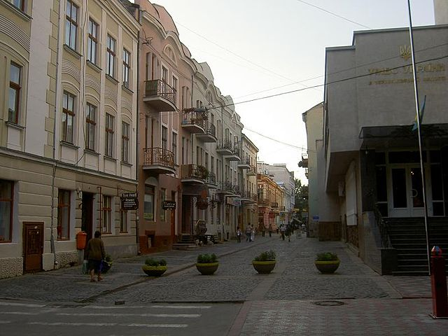
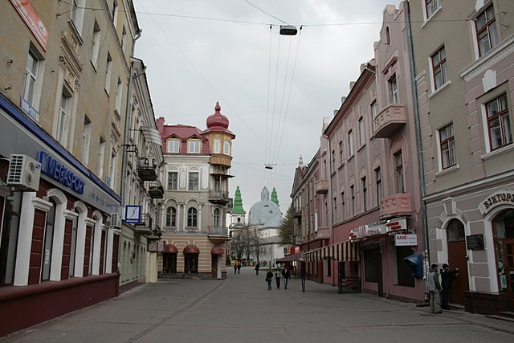
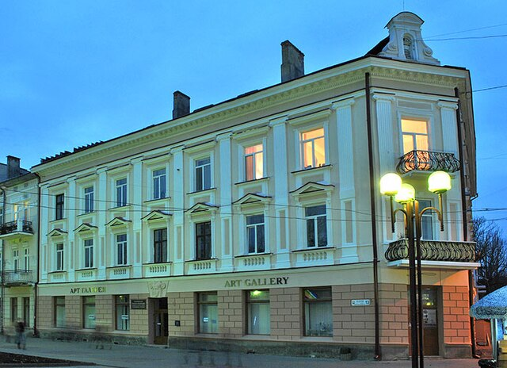
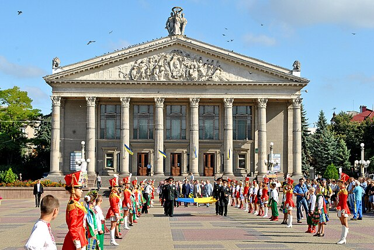

Пам'ятники Тернополя


У Тернополі встановлено 30 пам'ятників та пам'ятних знаків. Більшість розташовані в центральній частині міста: Тарасові Шевченку, Степанові Бандері, Іванові Горбачевському, Данилові Галицькому, Йосифові Сліпому, Ярославові Стецьку, Іванові Франку, Симону Петлюрі, Андрію Шептицькому та іншим відомим особистостям. Окрім того, щонайменше 5 пам'ятників не збереглося до нашого часу.
9 квітня 2022 року у Тернополі зник пам'ятник російському поетові Олександру Пушкіну, який громадські активісти вимагали демонтувати декілька років. Проте в Тернополі знаходилось і багато прихильників місцезнаходження цієї споруди у центрі міста. Актуально було рішення про знесення пам'ятника саме під час кровопролиття, яке вчинили рашистські окупанти в ході вторгнення в Україну. Хоча Олександр Пушкін був проти царської тиранії в російській імперії, проте і до війни в Україні він немав жодного відношення. Перед демонтажем пам'ятник був знову облитий фарбою, а ще раніше був обписаний нецензурними лайками. Більшість виступала все ж таки за демонтаж пам'ятника якнайшвидше. Імовірно, уникаючи дискусій та скандалів, міський голова Тернополя Сергій Надал наказав демонтувати пам'ятник під покровом ночі.
Культура


У місті діють Тернопільський обласний краєзнавчий музей, обласний художній музей, меморіальний музей політичних в'язнів, бібліотека-музей «Літературне Тернопілля», галерея Тернопільської обласної організації Національної спілки художників України та Музей Івана Пулюя.
2010 року розпочала свою роботу робоча група зі створення обласного музею Тараса Шевченка. У майбутньому історично-культурному закладі буде зібрано, зокрема, всі матеріали, пов'язані з перебуванням Кобзаря на Тернопільщині у 1846 році (у складі Археографічної комісії на Волині), присвячені йому твори місцевих митців як минувшини, так і сьогодення, взагалі обліковано й узагальнено всі документи, пов'язані з іменем Тараса Григоровича Шевченка, що зберігаються зараз у фондах обласних державного архіву та краєзнавчого і художнього музеїв.
Театральне життя на Тернопільщині взагалі пов'язане з існуванням у XVIII — на початку XIX століть у палацах та давніх замках поміщиків, графів так званих «маєткових театрів» з обладнаними залами, сценою, наявністю малого оркестру, хору з обдарованих панщизняних селян і освіченого диригента. Такі «маєткові театри» були в Золотому Потоці та Вишнівці. Палац у Вишнівці, де був «маєтковий театр», зберігся до наших днів.
29 березня 1864 року розпочав вперше свою діяльність професійний західноукраїнський театр товариства «Бесіда». Він показав десятки вистав у Львові, Перемишлі, Коломиї, Станіславі, Самборі та Чернівцях і на 15-му місяці свого існування прибув на Тернопільщину. 10 червня 1865 року на вулицях Тернополя були розвішані театральні афіші за підписом режисера Омеляна Бачинського. Вони сповіщали: «Товариство українського народного театру зі Львова поставить у місті Тернополі 20 драматичних творів». Кореспондент львівської газети «Слово» з цього приводу повідомляв, що тернополяни з великою радістю очікують дорогих гостей, небачених ще на галицькім Поділлі професійних артистів.